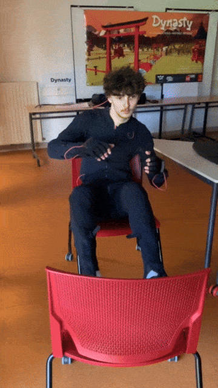
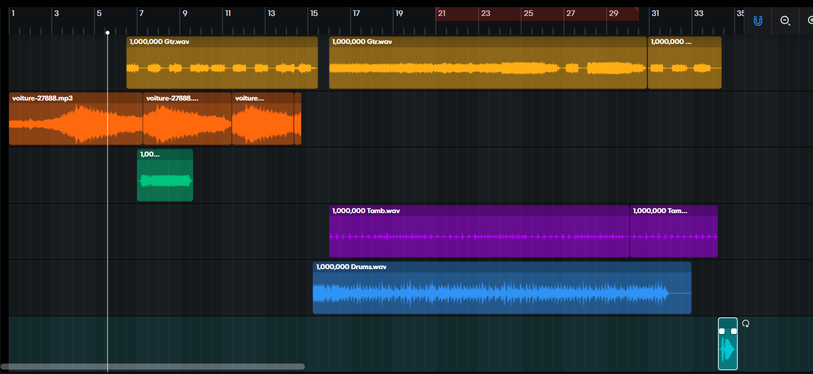
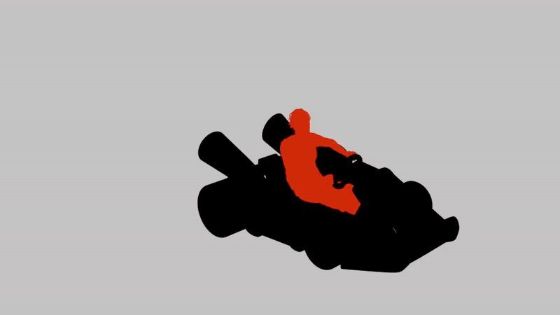

Trailer Mario Kart World
À propos du projet
Création d'un teaser innovant pour Mario Kart World utilisant la motion capture. Inspiré par les publicités iPod de 2005, ce projet met en scène des personnages en silhouettes noires avec des éléments clés mis en valeur par des couleurs vives. La vidéo combine animation, motion design et sound design pour créer une expérience immersive qui capture l'essence frénétique de Mario Kart.


